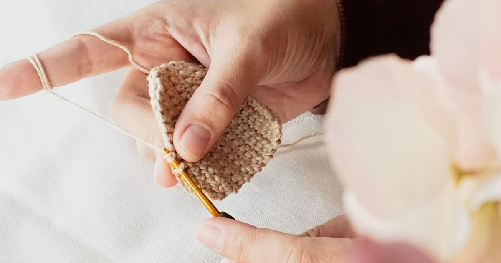
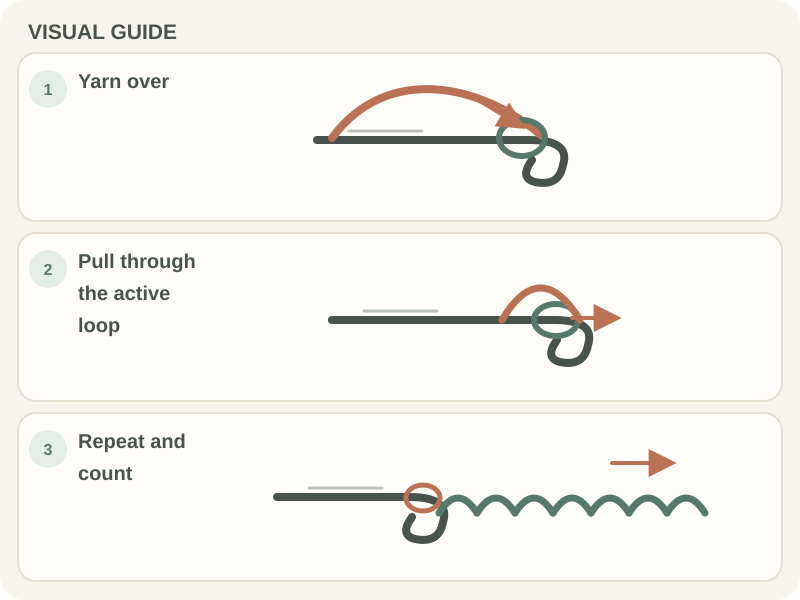

Crochet Basics · Beginner guide
How to Make a Foundation Chain in Crochet
Build a foundation chain with loops large enough for the next row’s hook to enter.

The foundation chain sets a project’s starting edge. If its loops are much tighter than later stitches, the fabric can pull inward even when the count is right.
Before you begin
Start with a slip knot and the number of chains specified by the pattern. A turning chain may count differently depending on the stitch and pattern notes.
Step-by-step instructions
- Hold the hook and working yarn so the strand is ready to catch without pulling the loop tight.
- Yarn over by bringing the working strand over the hook from back to front.
- Draw the strand through the loop on the hook. The new link is a chain; the loop left on the hook is not counted.
- Repeat, then pause to compare the links and check that the chain bends easily.

What to check
Evenness matters more than speed
Turn the chain to see its V-shaped links and count those, not the active loop. Insert into the chain space or strand specified by your pattern.
Frequently asked questions
Why is my first row hard to work into?
The chain may be too tight or you may be inserting into a less visible strand. A larger hook for the chain alone can help, if the pattern allows.
Does the loop on the hook count?
No. It is the active loop used to make the next stitch. Count completed chain links.
Can I use a larger hook just for the chain?
Some patterns suggest this to keep the foundation flexible. Use a larger hook only if the pattern allows it, since the edge may become wider.
Read the chain count before starting
A pattern's foundation chain may include the chains needed for the first row and, depending on the stitch, a turning chain. The instructions should explain where the first stitch goes. For example, “single crochet in the second chain from the hook” means the active loop is not counted as a chain and the first chain below it is skipped. Do not add a turning chain on your own unless the pattern tells you to. A chain count is part of the pattern's construction, not an estimate of finished width; the yarn, hook, and tension determine the actual measurement.
Make each link with the same motion
After the slip knot is on the hook, hold the base of the loop lightly with the yarn hand. Bring the working strand over the hook from back to front, catch it in the hook head, and draw it through the active loop. Each completed pull-through creates one chain link. Keep the hook head turned slightly toward the loop as it passes through, especially if the yarn keeps splitting. Repeating one controlled motion is easier to count than moving quickly and trying to correct the chain later.
Keep the chain loose enough to work into
A chain can look even on top but still be difficult to insert into if its loops are pulled very tight. Let the working strand feed with gentle resistance and avoid cinching the active loop after every pull-through. After five or six chains, stop and try inserting the hook into one link. If the hook cannot enter without stretching the yarn, loosen your grip or consider the pattern's suggestion for a larger hook for the foundation only. Changing the foundation hook can affect the edge width, so check the pattern and compare the fabric before continuing.
Find the strand your first row needs
A chain has a front-facing V and a back bump on its underside. Patterns may tell you to work into a particular chain or bump; some tutorials recommend the back bump for a neat edge, but that is not universal. Turn the chain in your fingers so the specified insertion point is visible. Insert the hook through the whole chain loop or strand the pattern names, not an adjacent loop by accident. Practicing a first row on a short chain helps you see how each insertion choice affects the edge.
Count completed links, not loops on the hook
To count the foundation chain, move from the hook toward the tail and identify each completed V-shaped link. The active loop on the hook is not a chain stitch, and the slip knot is not usually counted. Place a marker after every ten links if you have a long chain, then verify the total before starting row one. If the count is off, check whether you counted the knot or active loop. Counting in groups makes it easier to detect where you lost track than recounting a long chain repeatedly.
What a tight or uneven foundation changes
If the foundation edge is tighter than the rows above it, a rectangle can bow or pull inward. If chain sizes vary widely, the bottom edge may look uneven even when the first row count is correct. The first fix is usually to make another short sample with a relaxed yarn feed; trying to stretch the finished edge can distort the stitches. A foundation single crochet is an alternative construction that makes the chain and first row together, but it requires knowing single crochet and following a pattern written for that method. Do not substitute it into a pattern without checking the stitch count.
Takeaway: a chain is both a count and an edge
Make the number of links your pattern specifies, keep them open enough to work into, and identify the correct insertion strand before row one. The hook loop and slip knot do not add to the chain count. If the first row is difficult, inspect tension and insertion rather than assuming the pattern is wrong. Once the foundation is even and the count is verified, follow the pattern's turning-chain rule. That gives the next row a stable starting edge and makes later counting easier.
Common mistakes and how to fix them
- Cinching each link. A tight chain is hard to work into and may pull the edge inward. Let the link rest around the hook shaft.
- Counting the slip knot or active loop. Neither is normally a completed chain. Count the V-shaped links below the hook.
- Inserting into the wrong chain strand. The pattern may name the V, back bump, or another location. Turn the chain and identify the requested strand before row one.
Tips that make it easier
- Make a short test chain and see whether the next-row hook can enter without stretching the yarn.
- On a long foundation, mark groups of ten chains and check the total before starting.
- Keep the chain relaxed over your fingers instead of pulling the working yarn after every stitch.